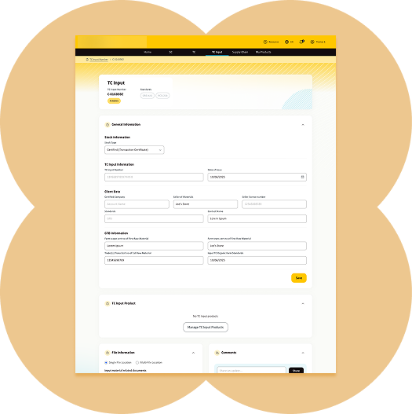
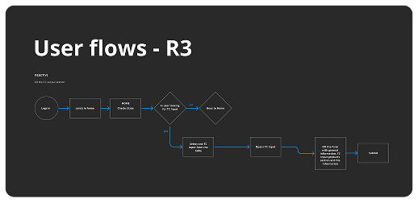
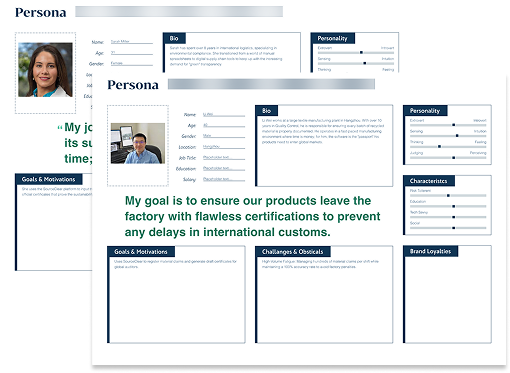
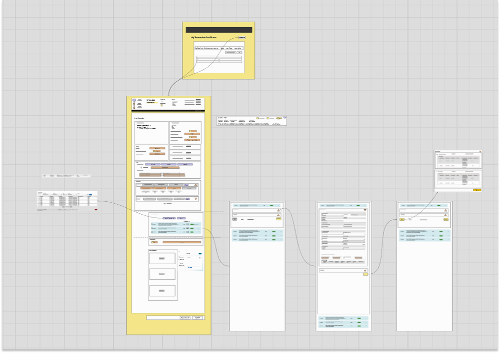
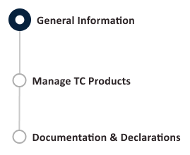
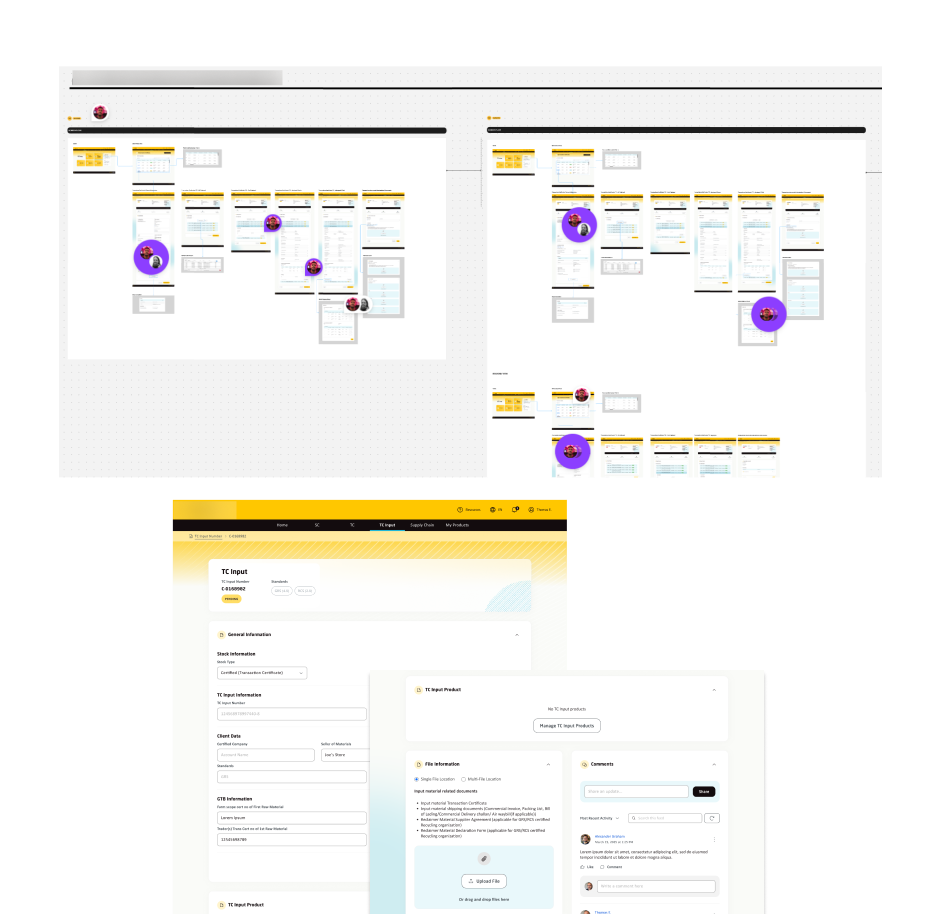
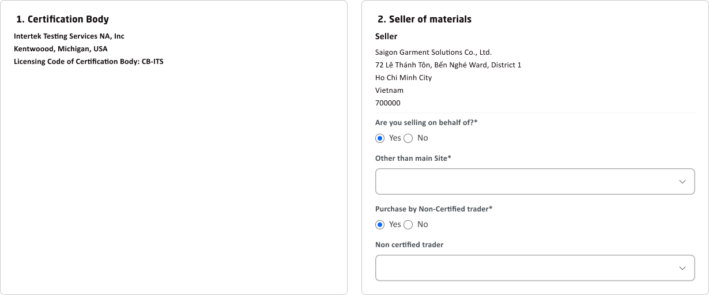
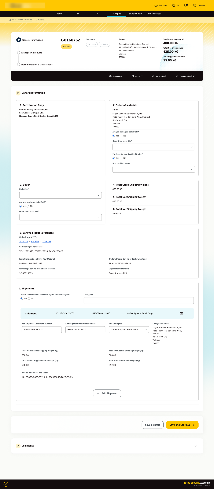

ChainSync
2025
This is a platform that helps organizations track and verify sustainable material claims throughout their supply chain. This process is critical for business compliance and brand trust.
Role
As the UX/UI Designer for this critical feature, my role was to design the end-to-end user interface for the Transactional Certificate Output flow.
Responsibilities
- Designed and validated the complete solution during an intensive, one-week rapid-design workshop for business alignment.
- Translated complex requirements into simple journeys while adhering to strict Salesforce Lightning Design System constraints.
- Architected rapid information systems, streamlining dozens of complex data fields into intuitive, logical screens.
- Led high-speed user flow creation and iterative UI design to secure final stakeholder validation.

1. Problem & Hypothesis
What I observed
Compliance officers re-typed the same company data on every certificate and hunted for required fields buried in the middle of a single, unstructured form.
What was asked vs. what I saw
Stakeholders asked for a cleaner, faster form. What users actually struggled with was structure — one flat list showing everything at once — not styling.
Hypothesis
If the flat form is restructured into a guided path that surfaces only the fields each step needs, users will complete certificate issuance with less friction and fewer entry errors — without breaking SLDS.
How I set myself up to solve it: map the end-to-end journey first (Stage 1), then design the hierarchy (Stage 2) and validate it with stakeholders in the same week (Stage 3).
Stage 1: Understanding the process and personas definition
Defining the flow
Creating the user flow to gain deeper insights into the end-to-end user journey.

User personas
Defined two primary user personas to align platform functionality with core business objectives.

Stage 2: Wireframing
Objective
Creating a robust information hierarchy tailored to complex user journeys and distinct persona needs.


One guided path — General Information → Manage TC Products → Documentation & Declarations. Each step surfaces only the fields it needs, in order, so users never face the 30-field screen at once.
Stage 3: Review and Hi-Fi Prototype
Objective
- Validate the coherence of functionalities from different users
- Validate the design and usability of the flow

Design System & SLDS Integration
SALESFORCE SLDS SPEC SHEET & DEV HANDOFF
Left — SLDS Base Component (native)
Right — Customized Extension (responsive)

Token mapping — what engineering inherits
--slds-g-color-brand-base-100 · success / error / warning states kept native
Theme-mapped
--slds-spacing-*) — 16px field rhythm, 24px section gaps
Native

1 2 3Client · Business
3-step issuance flow approved
Sign-off secured on the guided wizard: provider, material and compliance read as one continuous path with no dead ends.
Engineering · Technical
Feasible on SLDS, no overrides
Spec sheet accepted as-is: native tokens and extended components only, so platform updates won't break the build.
Compliance SME
Validation runs inline, zero friction
Every required field is checked before submission — no error hunting across a 30-field screen.
Impact & final outputs
Context & constraint → decision → result
Context & constraint Certificate issuance under strict Salesforce SLDS rules — no custom components and no platform overrides.
Decision Guided 3-step progressive disclosure — each step surfaces only the fields it needs, on native SLDS components.
Result One continuous path with inline validation and no dead ends — signed off by client, engineering and compliance in the end-of-week review.
Delivered handoff package
- End-to-end user flow for the certificate journey
- Two primary personas aligned to business objectives
- Wireframes covering the full information hierarchy
- Hi-fi prototype of the TC Input screen (full-resolution capture)
- SLDS spec sheet & dev handoff — token mapping, zero core overrides
- Annotated design review with recorded stakeholder approvals
Impact
My design, delivered from concept to flow in one week, provided a seamless UX for a complex task. By breaking the flow into logical steps and adhering to SLDS, my solution reduced cognitive load and minimized data-entry errors, enabling organizations to reliably track sustainable material claims.
Learnings
This project taught me that in complex global trade, a familiar visual style is the best way to build trust quickly. Keeping things simple is the most powerful tool a designer has — and when the platform leaves no room for custom components, the creative work is finding that simple path inside the rules instead of fighting them. Bringing engineering and compliance into the conversation early turned those constraints into decisions we shared, rather than objections we hit at handoff.